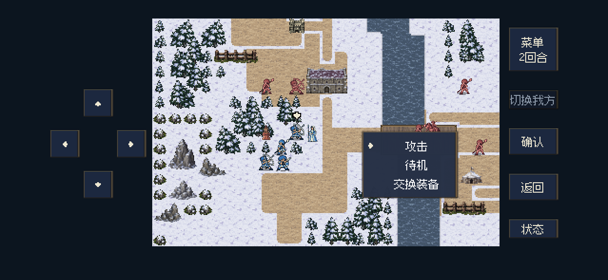
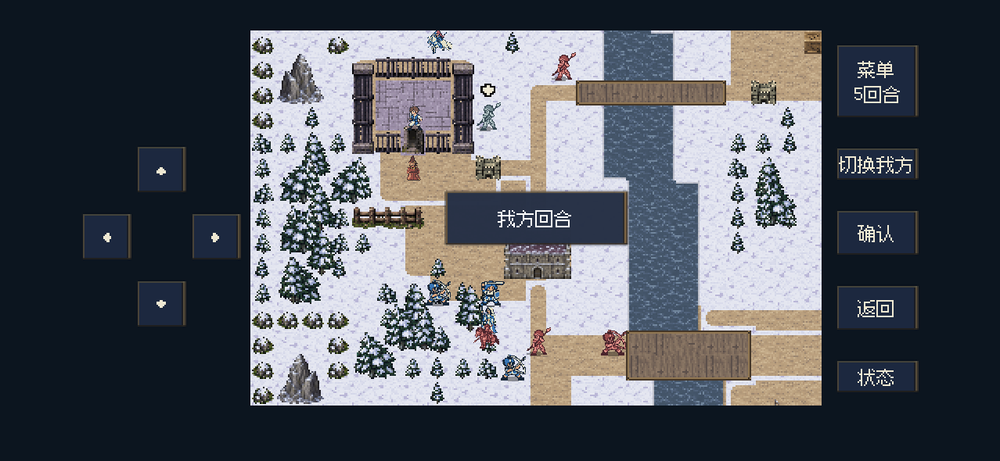
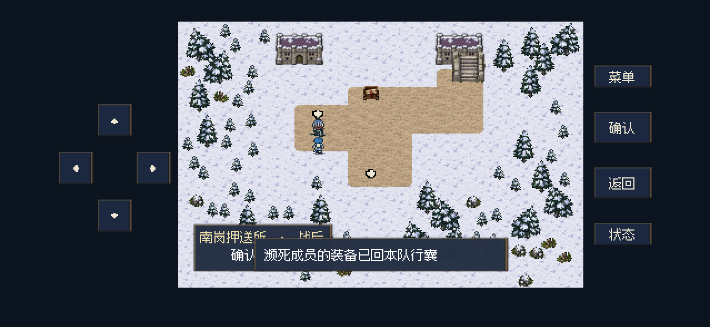

南岗押送所：菜单、增援与蕾娜
2026-10-28 · 已修复并完成一次完整试玩，第13回合通关。26项状态检查和16项原生流程检查通过。本轮未更新iPhone。
有攻击时先攻击、再待机；两名增援佣兵为3级、攻击9。蕾娜原先解除牢门锁定后仍保留“固定证人”待机标记，现修正为获释后自动沿安全路线撤离，战后仍可邀请入队。
修改依据、兼容处理与验证范围 · 完整试玩记录
有攻击选项：攻击在待机上方，默认选中攻击。
蕾娜获释后离开西牢房，从(7,8)移动到(7,6)；本战累计记录9次自动移动。
第13回合通关后，蕾娜仍可通过战后邀请加入队伍。
以上为Mac后台原生Godot的移动端布局截图。本轮试玩贝克、芙拉濒死，主线及战后邀请均正常继续；本次确认流程可完成，不宣称无伤通关。